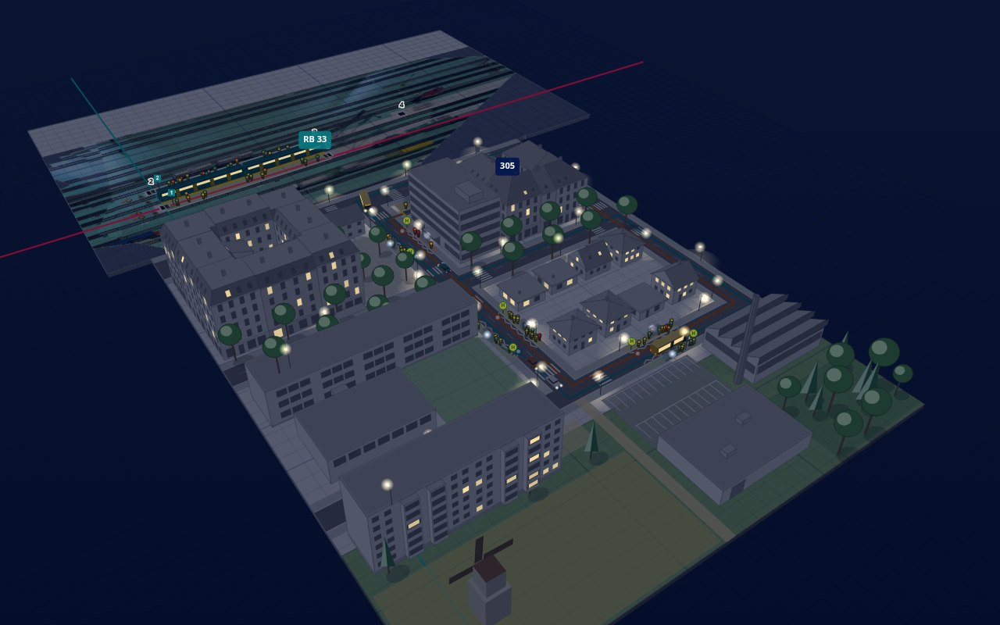

Platforms with passengers
Lay a platform between two markers. Passengers arrive, wait where their train stops, board and alight through the doors. Their colour shows their mood, from turquoise (happy) to red (annoyed).
Open source · runs in the browser
Point a phone or a webcam at your layout. ARail puts platforms full of passengers, a small town with streets and bus lines and a container terminal on it, runs the town through day and night, simulates delays and closures, and shows the trains your control system reports.
H0 · TT · N · any scaleArUco & AprilTag markersNo install, no calibration boardFast clock, day and night

 PhotoARail
PhotoARail
Everything is placed on the real layout in model millimetres and scaled to the prototype, so a person on an H0 platform is 20 mm tall.
Lay a platform between two markers. Passengers arrive, wait where their train stops, board and alight through the doors. Their colour shows their mood, from turquoise (happy) to red (annoyed).
Plattenbau (WBS 70, QP 61, P2), Gründerzeit blocks, an estate of single-family houses, a school, a supermarket, offices and a workshop, in the greys of an architectural model. Trees, fields and water around them.
Streets form a network with sidewalks, crossings and street lamps. Bus lines run along them from stop to stop, back and forth or round a ring (Ring ↻, Ring ↺), also from bus terminals; cars come and go at the edges.
Container trains, trucks and barges, a gantry crane over the loading tracks and a reach stacker for the yard. Pick a container and its new place; the crane moves it. Model wagons on the real layout carry printed deck cards, so their containers ride on them.
A fast clock runs the town: residents walk, take the bus or the train to work, school and shopping, and come home. Rush hours in the morning and evening; at night windows and street lamps light up.
Press F to fly a virtual camera over the layout, without the camera image. Build on a snapping grid next to the orthophoto of the real table, and add virtual table modules beyond its edges.
Stick markers over the whole table and film it: arail-survey measures every marker and writes a fixed, locked layout with an orthophoto. Model wagons get small tags of their own family, which never mix with the map.
Delays, cancellations, closures and crowd surges at platforms and bus stops; signal failures and rail replacement buses. Started by hand or scripted as scenarios for teaching.
A small Python bridge forwards train positions over WebSocket. When a real train stops at a platform, the virtual passengers board it.
Plugins add object types, simulations and disruption types in plain JavaScript modules. The editor builds their settings forms automatically.
The example layout extends the lab table with eight virtual table modules: a town with two ring bus lines, a station, fields and a wood. Seen here in the flyover, with the orthophoto of the real table behind it.



The clock runs twelve times faster than the trains and people, and can be set and stopped in the Simulate panel. Day and night · Streets and bus lines
Printed square markers lie flat on the layout. From the camera image alone, without a calibration board, ARail works out where the layout plane is and draws on it.
One visit to the lab gives a fixed layout; the lab-session guide has the checklist. The control system can follow later.
Print the marker sheets on matte sticker paper and check the 100 mm bar with a ruler. The black square is the marker size.
Marker 0 at a table corner, aligned with the edges, then one every 30–40 cm, at both ends of every platform and at the table corners.
Slow passes along and across the table with the phone's main camera, tilted 40–60°, two or three markers always in view: two to five minutes of video.
arail-survey measures every marker and writes a fixed, locked layout, a report and an orthophoto of the table. For a quick check in the lab: Build → Marker map → Survey a video.
Press F: the orthophoto lies on the table. Add table modules beyond its edges, platforms, streets, bus lines and houses on the grid, then export the layout file and keep it in your fork.
Run arail-bridge next to it with an adapter for your system. The simulated control system shows the flow without one.
No build step, no framework. A plugin is an ES module that registers what it adds; layouts load it by URL.
Guide to plugins · Layout file format · Control-system interface
// plugins/windmill.js: a new object type
export default function (arail) {
class Windmill extends arail.LayoutObject {
static type = "windmill";
static label = "Windmill";
static params = [{
key: "height_m", label: "Height",
type: "number", unit: "m", default: 18,
}];
computeGeometry() {
const c = arail.resolvePoint(this.world.map, this.spec.position);
return c && { center: c };
}
draw(view) {
const [x, y] = this.geometry.center;
const h = view.m(this.spec.height_m); // metres → model mm
view.prism(arail.rectFootprint([x, y], view.m(5), view.m(5)), 0, h,
{ side: "#e8e1d0", top: "#8a5a3c" });
}
}
arail.registry.registerObject(Windmill);
}| Version | Destination | Status |
|---|---|---|
| 0.1 | Tracking without a calibration boardMarker map survey, focal length estimate, tested on the lab photo | Arrived |
| 0.1 | Platforms, bus terminals, scenery, editorLayout files, plugins, passenger simulation | Arrived |
| 0.1 | Disruptions, scenarios, control-system bridgeSimulated, replayed and TCP JSON feeds | Arrived |
| next | A town through day and nightGerman house types, fast clock, residents on foot, by bus and by train | Arrived |
| next | Streets, bus lines and road trafficRoad network, bus stops, ring and back-and-forth lines, cars | Arrived |
| next | Flyover and table modulesVirtual camera, snapping grid, orthophoto of the real table | Arrived |
| next | A fixed layout from one videoarail-survey: locked marker map, report and orthophoto; Survey a video in the app | Arrived |
| next | The app in the chair's corporate designTürkis, Noto Sans and the logo of the Chair of Railway Operations | Arrived |
| next | Container terminal on rolling-stock markersTrains, trucks, barges and a gantry crane; deck cards with AprilTag tags on model wagons | Arrived |
| next | Lab session and live sessions in the EBLStickers on the whole table, one video, a fixed layout; then phones, webcams and a projector | Boarding |
| next | Adapter for the EBL control systemReal train positions instead of the simulator | Scheduled |
| later | Occlusion by real trainsVirtual things hidden where a real train stands in front of them; ideas and contributions welcome | Scheduled |